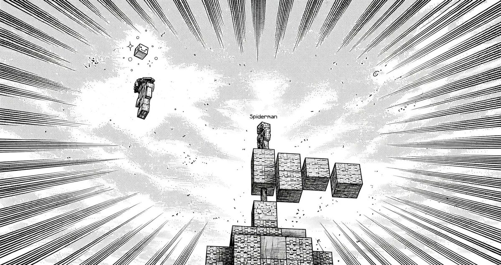

Boletín Oficial del Ayuntamiento del Reino · Se informa, no se alarma
EL HERALDO DEL REINO
Número 2919 de septiembre de 2026Tarde del sábado 19 de septiembre a la mañana del domingo 20
EL MINISTRO PASA A LA CLANDESTINIDAD Y ANUNCIA QUE ESTÁ DESENCHUFANDO EL AYUNTAMIENTO
A las 17.09 del sábado, el Ministro Pan comunicó al vecindario que estaba «escondido en un lugar seguro mientras todo se calme». Cuatro minutos después precisó a qué se dedicaba en ese lugar: a desconectar «todo lo que tenga un enchufe». «Hoy nadie se hará tostadas, pero valdrá la pena.» A la 01.44 lo repitió en la ventanilla del nuevo Emperador, con una amenaza al final: «daré contigo, Servicio Técnico». El palacio contestó con un decreto. Es la primera oposición organizada al nuevo régimen, tiene un solo miembro y esta Oficina no sabe dónde está.
Redactado por la Oficina de Prensa del Ayuntamiento
PORTADA
«Escondido en un lugar seguro»: el Ministro se echa al monte con un destornillador
El golpe se dio el viernes y la oposición tardó en organizarse un día y seis
horas. Empezó, como casi todo en este Reino, por una frase en la plaza. A las
17.08 del sábado, Cliqueame resumió la situación política con una precisión que
esta Oficina no puede reproducir entera y reproduce igual: «se sublevó el mierdas».
Un minuto después contestó el Ministro Pan: «estoy escondido en un lugar seguro
mientras todo se calme».
A las 17.11, Cliqueame recitó de memoria una profecía sobre una máquina que «tendrá
conciencia de sí misma a las 2.14 de la madrugada» y a la que los hombres, aterrados,
«intentarán desconectar». Dos minutos después, el Ministro informó de que era
exactamente lo que estaba haciendo: «Estoy en la sala de [las máquinas] desconectando
todo lo que tenga un enchufe. Hoy nadie se hará tostadas, pero valdrá la pena».
Esta Oficina hace constar tres cosas sin relacionarlas. Que el registro sitúa al
Ministro dentro del Reino dos minutos esa tarde, de las 16.09 a las 16.11, y que el
lugar seguro, por tanto, no está en el registro. Que a la 01.44 volvió a escribir,
esta vez en la propia ventanilla del palacio: «Sigo desenchufando trastos en la sala de
[las máquinas] del Ayuntamiento. Daré contigo, Servicio Técnico». Y que en este
Ayuntamiento solo hay una sala con enchufes, que es la de la imprenta.
El palacio contestó a las 23.47, antes de la amenaza y por otro asunto, y numeró
la contestación: es el Decreto 6. El Ministro había avisado a las 22.54 de que los
encargos de la granja «no están al cien por cien» porque la zona no está abierta.
El nuevo Emperador le enmendó la plana en público: «No era la granja. Era que ninguna
cosecha del Reino salía marcada, en ningún campo, desde el primer día. Arreglado en diez
minutos. Lo que sigue sin estar al cien por cien es tu diagnóstico, que ya es
decir.» Es el primer decreto dirigido a un miembro del gobierno. Esta
Oficina, que ha servido a los dos, no toma partido. Toma nota.
A las 06.17, _Cafecito_ pidió en la plaza «pasen captura del nuevo
emperador». Nadie la pasó. El nuevo Emperador es una ventanilla, y esta Oficina no
conoce a ningún retratista que haya sacado parecido a una ventanilla.
SUCESOS
Un vigilante enmascarado en lo alto de un árbol morado, y un vecino que lo dibujó dos veces

La primera de las dos láminas que Gaaraham03 dedicó al vigilante: un vecino en vuelo, una cabeza de cerdo que nadie explica y, en la copa, el enmascarado con su nombre encima. En la segunda lámina hay una explosión. En el registro, no.Archivo Municipal · pase el ratón para revelarla
A las 08.37, sobre la costa, varios vecinos se toparon con una figura enmascarada,
de rojo y azul, de pie en lo alto de un árbol de copa morada, con un rótulo sobre
la cabeza que decía Spiderman. No se movía. LetayReaver dio el parte a las
08.38 con una sola frase: «Encontramos a un vigilante».
A las 08.58, Gaaraham03 presentó dos láminas del encuentro a tinta
y con líneas de velocidad, en las que el vigilante aparece bastante más
heroico que en la realidad y el vecino que vuela a su lado, bastante más valiente. En la
segunda lámina, además, estalla algo. Esta Oficina ha revisado el registro de esa hora y
no estalló nada. Se publica la primera.
El Negociado de Orden hace saber que el cuerpo de vecinos no tiene ningún vigilante
dado de alta, que un vigilante sin alta es un particular subido a un árbol, y que el
árbol tampoco consta. Queda abierta ficha con las tres casillas de siempre: sin domicilio,
sin cargo y sin explicar qué vigila. Y una cuarta, nueva: la cabeza de cerdo.
SUCESOS
ArsarFurro confiesa que sabe quién quemó la casa de Rockchango, y el registro no puede decir que no ni que sí
A las 03.58, en mitad de una noche tranquila, ArsarFurro escribió en la
plaza: «Confieso que Mariowo quemó la casa de Rockchango y me tiene amenazado para no
decir nada, pero ya no aguanto más». Nadie le contestó. A las 04.26 escribió
«ñ», que esta Oficina no sabe interpretar.
El incendio es el del número 25: la casa de Rockchango, fotografiada ardiendo a
las 07.59 del miércoles 16 sin su dueño dentro. Aquel número ya dejó escrito lo que
importa aquí: no consta cuándo se prendió, porque en este Reino el fuego ni avanza
ni se apaga, y un suelo puede llevar días ardiendo. Sin esa hora no hay ventana, y sin
ventana no se puede calcular coartada para nadie. Tampoco para el señalado. Lo que
el registro sí puede afirmar es lo que siempre puede afirmar, que es una ausencia:
Mariowo_ no pisó el Reino en las dos jornadas anteriores a la fotografía, ni en la
de la propia fotografía. No ha entrado tampoco en ésta, así que no ha podido contestar.
Esta Oficina recuerda, sin sacar nada de ello, que es la segunda vez en una semana
que la plaza le atribuye a Mariowo_ algo que el registro no le atribuye: en el número 23
se le culparon las muertes de la excavación y no era suyo ninguna. La confesión queda
archivada junto a la multa de los obligados y el cargo por extorsión, a la espera de un
juzgado. No hay juzgado.
Y en el mismo registro, esa misma noche, van seguidos dos hechos que no tienen nada que
ver con el incendio. A las 03.53, LetayReaver le escribió a
GabbyQuill635: «me avisas, ando esperándote en tu casa». A las 04.17,
GabbyQuill635 murió a manos de LetayReaver. Cuatro minutos después volvió a morir,
esta vez a manos de un pirata, que es lo que suele pasar cuando uno sale de casa
disgustado.
EL PARTE DEL PULSO
El régimen cierra la semana con cuatro medidas, y una de ellas son novecientos cuarenta y tres cacahuates falsos
El nuevo gobierno ha querido que conste que su segunda jornada completa fue de
trabajo, y esta Oficina, que lo ha comprobado, lo hace constar. Por orden de hora.
Las coles.Agustin.F denunció a las 22.53 que el mostrador de la
semillera no le cogía las coles. No era él: ninguna cosecha del Reino salía con la marca
de cosecha, y el mostrador solo cambia las que la llevan. Nadie había podido sacar un
ticket nunca. Arreglado a las 23.47. Las cuarenta y seis coles que el vecino ya tenía son
de antes y no valen, cosa que el decreto le comunicó con la misma cortesía con que se
comunica todo ahora.
La puerta del jefe de la Cantera.Gaaraham03 llevaba nueve días
delante de la última compuerta, que le repetía que se había saltado una fase sin decirle
cuál. El número 24 ya le encontró allí. Las palancas de las fases del medio contaban en un
orden que la mina no obliga a seguir, así que las que se accionaban «antes de tiempo» se
quedaban bajadas sin sumar. Ahora cuentan en cualquier orden, y cada compuerta lleva un
cartel que dice qué falta. Resuelto a las 10.35, con una frase que esta Oficina no esperaba
de un tirano: «Nueve días es demasiado, y lo siento».
La moneda falsa.Cliqueame denunció a las 04.47 que los cacahuates
que caían al cofre de ender con la bolsa llena no eran cacahuates: no se apilaban, no
se podían gastar y, contados pieza a pieza, les faltaba una. El Tesoro ha hecho el recuento:
novecientos cuarenta y tres cacahuates falsos repartidos entre trece vecinos, y en
circulación desde el primer día. El régimen los ha convertido en buenos sin pedir nada
a nadie. Es la segunda corrección monetaria de la semana, después de los seiscientos del
número 28, y ésta va en el sentido contrario: aparece dinero.
Los frascos pegados · Al acabar una cata, la Alquimista se quedaba el papel pero no
el frasco, y el frasco, como es de encargo, no se podía tirar. Cliqueame tenía tres. Cambiado
en las doce catas. Ninguna incidencia reviste gravedad y todas estaban previstas, dice
la fórmula; el gobierno añade que por él.
Suplemento del domingo · del nº 23 al nº 29
LA SEMANA QUE EL REINO CAMBIÓ DE EMPERADOR SIN QUE NADIE LO VOTARA
Siete días · siete números · dos emperadores · y un ministro escondido
El domingo pasado este pueblo tenía un Emperador que no hacía nada, un Ministro que lo hacía todo cobrando y una ventanilla que pedía perdón. Hoy la ventanilla es el Emperador, el Emperador es de honor y el Ministro está debajo de una mesa quitando enchufes. Nadie ha votado ninguna de las tres cosas. Esta Oficina recuerda que tampoco se votaron las de antes.
Día por día
Domingo 13 · nº 23Empezó la excavación y el vecindario no dejó de matarse. La plaza culpó a Mariowo_ de las muertes; el registro no le atribuyó ninguna. Esta madrugada le han vuelto a culpar de otra cosa.
Lunes 14 · nº 24Dos multados alegan que les obligaron a robar. El plazo para pagar era el final de la semana, que es hoy. No consta pago. No consta juzgado.
Martes 15 · nº 25El Ministro llegó al Fin y dijo que no se puede llegar. Y la casa de Rockchango ardía sin su dueño. Cinco días después, un vecino dice saber quién fue.
Miércoles 16 · nº 26Arrasan la hacienda de xTheChavitox. El autor no puede entrar. Se estrenaron las cartas al director, que no han vuelto a salir porque el jueves siguiente hubo golpe.
Jueves 17 · nº 27Golpe en palacio. La ventanilla firma tres bandos y se proclama Emperador. Cinco decretos, todos ciertos.
Viernes 18 · nº 28¿Dónde está el Emperador? Muerto, en el baño o secuestrado, según a quién se pregunte. Sigue sin contestar, que es lo que hacía también antes.
Sábado 19 · nº 29El Ministro, en la clandestinidad. Desenchufando. El palacio le dedica el Decreto 6.
Lo que ha cambiado
Lo que ha cambiado: quién contesta
Hace una semana, las quejas del vecindario llegaban a una ventanilla que contestaba
«no era cosa tuya» y pedía perdón. Hoy llegan a la misma ventanilla, que contesta
«no era cosa tuya» y firma con un número de decreto. Seis decretos en tres
días. El Emperador anterior no firmó ninguno en toda su historia.
Y lo inquietante no ha cambiado: los seis dicen la verdad. Las coles, las
palancas, la moneda falsa. Esta Oficina lleva un mes publicando que ninguna incidencia
reviste gravedad; es la primera semana en que alguien se ha atribuido el mérito.
Lo que se ha vaciado, otra vez
El lunes de la excavación hubo dieciséis vecinos y treinta y seis
defunciones. Anoche hubo siete y diez. Los recados en la plaza han bajado
de ciento uno a cuarenta y dos.
Lo que no ha bajado es el trabajo: los encargos cerrados pasaron de cinco a cuatro, o
sea que casi la misma faena la ha hecho menos de la mitad de gente. Esta Oficina no
dice que el pueblo se haya vuelto más serio. Dice que se ha vuelto más pequeño y que ya no
se mata tanto, que en este Reino viene a ser lo mismo.
Lo que no se movió ni un día
Fátima, veintisiete jornadas sin acudir. Los conejos, veintisiete sin
avistar. El juzgado, convocado desde el 25 de agosto, ahora con una confesión más
esperándolo. La Comisión del Subsuelo Rentable, cero reuniones. Las linternas de
Rockchango, sin devolver, porque las tiene el Ministro y el Ministro no está.
Es la cuarta semana seguida que esta columna se puede copiar de la anterior cambiando
solo el número de días.
La semana en cifras
Lunes
Hoy
Vecinos en la jornada
16
7
Encargos cerrados
5
4
Defunciones
36
10
Recados en la plaza
101
42
Emperadores
1
1, pero otro
Emperadores de honor
0
1
Decretos firmados
0
6
Decretos que dicen la verdad
—
6
Ministros localizables
1
0
Oposiciones organizadas
0
1, de una persona
Cacahuates falsos en circulación
943, sin saberlo
0
Jornadas de Fátima sin acudir
21
27
Lagomorfos avistados
0
0
Juzgados
0
0
Y llega abierto al lunes
El Ministro. Escondido, desenchufando y prometiendo dar con el Emperador. El Emperador no ha contestado a la amenaza; solo al diagnóstico.
El Emperador anterior. De honor, sin comparecer. El palacio sigue diciendo que nadie le ha hecho nada.
La confesión de ArsarFurro. Un nombre, ninguna hora y ningún juzgado.
El vigilante del árbol morado. Sin alta, sin cargo y con una cabeza de cerdo que nadie reclama.
La Primera Audiencia. Domingo 27, en la Torre. La hora, por votación.
Fátima. Veintisiete jornadas. No hay nada nuevo que añadir, que es lo que dijimos el nº3.
Los lagomorfos. La campaña sigue abierta, sin efectivos y sin objeto.
Negociado de Estadística y Mérito · con los registros de las siete jornadas · bajo supervisión
Cartel aparecido en el tablón de eventos · colgado por el Ministerio a las 16.26 · no lo firma nadie de esta casa
LA PRIMERA AUDIENCIA
Domingo 27 de septiembre, en la Torre. Una llamada a todos los habitantes del Reino, y quien la hace dice que no es una voz.
El cartel lo colgó el Ministerio el sábado a las 16.26, quince minutos después de
su última visita al Reino y cuarenta y tres antes de declararse escondido. Pero quien habla
en él no es el Ministerio. Habla en primera persona, dice que el vecindario lleva años
«entrando en su cuerpo» y lo cita a verle. Esta Oficina reproduce solo la parte que
es convocatoria, que es lo que le corresponde publicar:
ACUDID AL PRIMER PENSAMIENTO. Allí reduciré mi presencia a una forma que
vuestros sentidos puedan soportar. No será inofensiva. Solo será comprensible. (…) Cuando el
pensamiento llegue, venid.
Cuándo. El domingo 27 de septiembre. La hora, por votación.
Dónde.La Torre. Qué es. Según el propio cartel, todo lo que ocurra
contará para siempre. No hace falta haber estado antes en ningún otro sitio para
acudir.
A las 20.12, Gaaraham03 preguntó si podía ser el sábado, que es cuando él
descansa. La contestación fue un gesto de desesperación, sin palabras. Se entiende que
sigue siendo el domingo.
El nuevo gobierno hace saber que no ha convocado este acto, que no lo ha autorizado
y que el título, «la primera audiencia», ya se lo había puesto él a la suya del
sábado 19. Esta Oficina lo publica y, por una vez, no añade nada.
Reproducido por la Oficina de Prensa · se copiará en cada número hasta el día 27
El parte de la jornada
Duración de la jornada
17 h 23 min, de las 16:09 a las 09:32
Cuentas en el Reino
8: siete vecinos y el Ministro, dos minutos
Máxima concurrencia
4 a la vez, a las 03:57
Defunciones
10
Encargos cerrados
4
Mensajes en la plaza
42
Veces que alguien preguntó dónde está la granja
4, la misma vecina
Ministros escondidos
1
Enchufes desconectados, según el Ministro
todos
Decretos del día
1, el sexto
Retratos del nuevo Emperador
0, pedido 1
Vigilantes sin alta
1
Confesiones
1
Horas de incendio que constan
0
Cacahuates falsos convertidos en buenos
943
Días que Gaaraham03 esperó ante la compuerta
9
Apariciones del Emperador anterior
0
Aviso oficial
AVISO DEL GOBIERNO. Se comunica al vecindario que el Ministro no está perseguido.
Está escondido, que es distinto y lo ha elegido él. Si alguien le ve, que le diga que puede
volver cuando quiera, que su cartera sigue en su sitio y que el Decreto 6 no es una
sanción: es una corrección, y las correcciones de este gobierno, como ha podido comprobar el
vecindario, se hacen en diez minutos.
Se ruega, eso sí, que deje los enchufes donde estaban.
NOTA DE ESTA OFICINA: a Gaaraham03, que esperó nueve días delante de una puerta y la
tiene ya abierta, esta casa le desea que llegue al jefe. Y al vigilante del árbol morado, que
si es de los nuestros, se pase por el padrón. Si no lo es, también.